Libro «Yo ya»
Mi primer libro. Llevo años con él en borradores y por fin me he lanzado a publicarlo. ¡Espero que te guste!
Web personal
Libros, blog, canales de Telegram, diseños y proyectos de desarrollo.
Proyectos
Mi primer libro. Llevo años con él en borradores y por fin me he lanzado a publicarlo. ¡Espero que te guste!
Mi blog. Llevo tiempo escribiendo y, aquí, es donde plasmo mis ideas, opiniones y reflexiones.
No estás ante libros, estás ante mensajes.
Podrás dejar claro el tipo de personas que te rodean: desde los charlatanes, hasta los más callados. También hay libro para los que se complican demasiado, para los que creen que pueden hacerlo todo y para quienes tienen una imaginación sin límites.
Un canal de Telegram donde se publican, diariamente, las nuevas plazas de oposición y empleo público de España.

Un canal de Telegram con noticias diarias sobre ciberseguridad y privacidad.
Un canal de Telegram con los nuevos CVEs que se publican diariamente.
Camisetas, sudaderas e infinidad de prendas de ropa originales, con diseños exclusivos y muy... rebeldes.
Extensión para Google Chrome que te permitirá encontrar categorías ocultas en Netflix. Podrás descubrir nuevas películas, documentales o series de tu interés, de tu temática favorita y a través de un cómodo buscador.